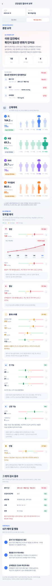

건강검진 결과 AI 요약 화면정의서
결과 화면의 모든 요소가 무엇을, 어떤 값으로, 어떤 조건에서 보여 주는지 정의합니다. 왼쪽 표의 ID는 오른쪽 화면 이미지(확인 필요 예시)와 대응하고, 값의 출처는 아래 08 데이터 정의의 필드명으로 적었습니다. 크기·색·간격 같은 시각 디자인은 정하지 않습니다. 오른쪽 이미지는 구조를 보여 주는 참고안이고, 최종 디자인은 디자이너가 정합니다. 화면 이미지는 프로토타입에서 그대로 뽑은 SVG라 표와 어긋나지 않습니다.
화면 지도
위에서 아래로 여덟 영역입니다. 영역 문자(A~H)가 요소 ID의 앞자리입니다. 예: E04는 E 영역의 4번 요소. H는 E와 F 사이에 놓입니다.
유형은 텍스트 / 숫자 / 배지 / 버튼 / 그래픽 / 컨테이너 중 하나. 노출 값은 화면에 실제로 찍히는 문자열 또는 그 규칙. 출처는 08의 필드명이며, [AI]가 붙은 것만 AI가 생성한 문장이고 나머지는 전부 규칙 계산입니다. 조건이 비어 있으면 항상 노출합니다.
헤더
| ID | 요소 | 유형 | 노출 값 | 출처 | 조건 · 규칙 |
|---|---|---|---|---|---|
| A01 | 뒤로가기 | 버튼 | ‹ | — | 탭하면 검진 상세(직전 화면)로 돌아간다. 요약은 저장돼 있으므로 다시 열면 즉시 표시 |
| A02 | 화면 제목 | 텍스트 | 건강검진 결과 AI 요약 | 고정 | 가운데 정렬 |
A · y 0–57

검진 메타
| ID | 요소 | 유형 | 노출 값 | 출처 | 조건 · 규칙 |
|---|---|---|---|---|---|
| B01 | 검진일 | 라벨+값 | 검진일 / 2025.06.19 | checkup.examDate | yyyy.MM.dd. 검진일이 없으면 등록일을 쓰고 라벨을 "등록일"로 바꾼다 |
| B02 | 검진기관 | 라벨+값 | 검진기관 / 메디피움의원 | checkup.orgName | 없으면 "검진기관 정보 없음". 두 칸은 같은 폭으로 나란히 |
| B03 | 예시 전환 토글 | 세그먼트 | 정상 예시 / 확인 필요 예시 | — | 프로토타입 전용. 실서비스에는 노출하지 않는다. 실서비스에서는 summary.level에 따라 한 가지 화면만 그린다 |
B · y 65–181
종합 요약
"뭘 먼저 봐야 하지?"에 답하는 영역. 결론 카드 하나(제목 + AI 문장 + 숫자 세 칸), 상황에 따라 우선 확인 항목 또는 현재 상태 카드 하나. 별도의 "AI 한줄 정리" 카드는 두지 않고 결론 카드에 합친다.
| ID | 요소 | 유형 | 노출 값 | 출처 | 조건 · 규칙 |
|---|---|---|---|---|---|
| C01 | 섹션 라벨 | 텍스트 | 이번 검진 한눈에 보기 / 종합 요약 | 고정 | 작은 라벨 + 제목 |
| C02 | 결론 카드 | 컨테이너 | 배경 톤 | summary.level | attention과 normal의 배경 톤을 구분한다(확인 필요 = 주의 톤, 정상 = 안정 톤) |
| C03 | 카드 라벨 | 텍스트 | AI 건강검진 요약 | 고정 | 강조 색 |
| C04 | 결론 제목 | 텍스트 | 이번 검진에서 확인이 필요한 변화가 있어요 | summary.headlineKey | 정해진 문장 중 하나(→ 07 문장 사전). AI가 만들지 않는다. 두 줄 |
| C05 | 결론 설명 | 텍스트 | 흉부 X선에 재검 소견이 있고, 혈압과 공복혈당이 이전보다 높아졌어요. 이번 결과만으로 진단할 수는 없지만, 가까운 시일 내 재검·재측정하고 필요하면 의료진과 상담해 주세요. | summary.lead [AI] | 정확히 2문장: 1문장 = 무엇이 눈에 띄는지, 2문장 = 어떻게 받아들이면 되는지. 수치 없음 · 검사명은 넣어도 된다. 옛 "AI 한줄 정리"의 역할을 여기서 한다 |
| C06 | 숫자 칸 · 정상 | 숫자+라벨 | 10 / 정상 | counts.ok | E 영역 검사 행 + H 영역 판정형 검사 중 상태가 ok인 개수 |
| C07 | 숫자 칸 · 관리 필요 | 숫자+라벨 | 4 / 관리 필요 | counts.caution | 상태 caution 개수 |
| C08 | 숫자 칸 · 확인 필요 | 숫자+라벨 | 4 / 확인 필요 | counts.high | 상태 high 개수. 세 칸의 합 = 수치 검사 행 수 + 판정형 검사 수(예시 13 + 5 = 18). 칸 아래 설명 문장은 두지 않는다 |
| C09 | 우선 확인 항목 카드 | 컨테이너 | 우선 확인 항목 / 중요한 변화부터 정리했어요 + 배지 "확인 필요" | priority[] | 조건: counts.high > 0 또는 counts.caution > 0. 최대 3행. 정렬: 검진기관 판정 확인 필요(판정형 검사의 재검 권고가 가장 앞) → 수치 검사 확인 필요 중 상승 추세 → 관리 필요 중 상승 추세 → 나머지 관리 필요 |
| C09-1 | 순위 번호 | 배지 | 1 · 2 · 3 | index | 순위 배지 |
| C09-2 | 검사명 | 텍스트 | 흉부 X선 / 혈압 / 공복혈당 | priority[].name | 혈압은 수축기·이완기를 묶어 하나로. 판정형 검사도 올 수 있다 |
| C09-3 | 값 흐름 | 텍스트 | 134/86 → 140/90 → 148/94 mmHg 판정형: 검진기관 소견 경화 소견 · 폐렴 의심 | priority[].history · priority[].note | 수치 검사는 최근 3회, 마지막 값만 굵게 + 단위. 이전 기록이 1개면 2개, 없으면 "최근 결과 232 mg/dL". 판정형 검사는 "검진기관 소견" + 소견 문구 |
| C09-4 | 변화 태그 | 배지 | 재검 권고 / 높아짐 / 낮아짐 / 관리 필요 | priority[].trend | 판정형 검사→재검 권고(분홍) · up→높아짐(분홍) · down→낮아짐(파랑) · 이전 기록 없거나 변화 없음→행 상태명(관리 필요=노랑, 확인 필요=분홍) |
| C10 | 현재 상태 카드 | 컨테이너 | 한눈에 보기 / 현재 상태 + 배지 "안정적" | — | 조건: C09 조건이 거짓일 때(모두 정상) C09 대신 노출. 2×2 격자로 혈압·공복혈당·총콜레스테롤·BMI 값과 "정상" 라벨 |
C · y 190–831
신체계측
"또래랑 비교하면 어디쯤이지?"에 답하는 영역. 항목마다 카드 하나, 카드마다 사람 그림 5개. 응원 문구나 검사 의미 설명은 두지 않는다.
| ID | 요소 | 유형 | 노출 값 | 출처 | 조건 · 규칙 |
|---|---|---|---|---|---|
| D01 | 섹션 헤더 | 아이콘+텍스트 | 👤 신체계측 / 내 또래와 비교한 내 신체 상태를 한눈에 확인해보세요. | 고정 | 아이콘 + 제목 + 부제 |
| D02 | 기준 안내 (카드 아래) | 텍스트 | ⓘ 동일한 성별·연령대 100명을 기준으로 내 결과가 어느 위치에 있는지 보여드려요. | 고정 | 안내 박스. 카드 4장 아래에 둔다(카드보다 먼저 읽을 필요가 없는 보조 설명). 또래 분포 데이터가 없으면 "또래 비교 데이터를 준비 중이에요"로 교체 |
| D03 | 항목 카드 | 컨테이너 | 4장 고정 순서: 키 → 체중 → BMI → 허리둘레 | body[] | 값이 없는 항목은 카드를 빼고 순서를 당긴다. 항목마다 고유 색을 하나씩 두어 카드 안의 번호·등수·사람 그림·말풍선이 같은 색으로 묶이게 한다(색 자체는 디자이너 결정) |
| D03-1 | 번호 배지 | 배지 | 1~4 | index | 항목 색 배경 |
| D03-2 | 항목명 | 텍스트 | 키 / 체중 / BMI / 허리둘레 | body[].name | — |
| D03-3 | 측정값 | 숫자+단위 | 164.2 cm · 69.3 kg · 25.7 kg/m² · 86.0 cm | body[].value · body[].unit | 소수 1자리 고정. 카드에서 가장 큰 숫자, 단위는 작게 |
| D03-4 | 등수 라벨 | 텍스트 | 내 또래 100명 중 | 고정 | 보조 텍스트 |
| D03-5 | 등수 | 숫자 | 70등 · 81등 · 78등 · 80등 | body[].rank | 경계값표(국민건강영양조사 2022~2024, 여자 40-44세)로 계산한 값. 1~99 정수, 값이 작은 쪽이 1등. 항목 색으로 크게 강조. rank가 없으면 "—"와 D03-7을 전부 연한 톤으로 |
| D03-6 | 상태 배지 | 배지 | 조금 큰 편이에요 / 무거운 편이에요 / 조금 높은 편이에요 / 조금 굵은 편이에요 | band × body[].health | 문구는 07 배지 사전. 톤: health=warn이면 주의 톤, 아니면 band 2~4는 안정 톤, band 1·5는 중립 톤 |
| D03-7 | 사람 그림 ×5 | 그래픽 | 왼쪽부터 band 1~5 | band = ceil(rank/20) | 내 band만 항목 색, 나머지는 같은 색의 연한 톤. 그림은 항목 특성을 따른다: 키=전체 크기, 체중=몸 전체 폭, BMI=몸통 둥근 정도, 허리둘레=옆모습 배 돌출 |
| D03-8 | "나" 말풍선 | 배지 | 나 | 내 band | 내 그림 위에만, 항목 색 배경 |
| D03-9 | 등수 구간 라벨 | 텍스트 | 1~20등 · 21~40등 · 41~60등 · 61~80등 · 81~100등 | 고정 | 그림 아래 한 줄, 줄바꿈 없음. 내 band만 항목 색으로 강조. 구간 이름(작은 편 등)은 여기에 쓰지 않는다 |
D · y 831–1674
항목별 해석
"이 숫자는 정상 범위 어디쯤이지?"와 "지난번보다 나빠졌나?"에 답하는 영역. 검사군 = 카드, 검사 = 행. 행마다 자기 기준 범위 막대와 화살표가 있다.
| ID | 요소 | 유형 | 노출 값 | 출처 | 조건 · 규칙 |
|---|---|---|---|---|---|
| E01 | 섹션 헤더 | 텍스트 | 검사 항목별 이해 / 항목별 해석 / 내 수치가 기준 범위 어디에 있는지 막대로 보여드려요. 화살표를 누르면 최근 5회 변화를 볼 수 있어요. | 고정 | 이전 검진이 하나도 없으면 부제의 두 번째 문장을 뺀다 |
| E02 | 색 범례 | 텍스트 | 정상 · 관리 필요 · 확인 필요 (각 상태 색 견본과 함께) | 고정 | 한 줄. "경계"·"주의"라는 말은 쓰지 않는다 |
| E03 | 검사군 카드 | 컨테이너 | 순서 고정: 혈압 → 혈당 → 콜레스테롤 → 간 기능 → 신장 기능 → 빈혈 | groups[] | 행이 하나도 없는 검사군은 카드를 뺀다. 확인 필요·관리 필요 카드는 정상 카드와 시각적으로 구분한다 |
| E03-1 | 검사군 아이콘 | 그래픽 | ♥ ◆ ◯ ◒ ◐ ● | groups[].key | 카드 상태 톤을 따른다 |
| E03-2 | 검사군명 | 텍스트 | 혈압 / 혈당 / 콜레스테롤 / 간 기능 / 신장 기능 / 빈혈 | groups[].name | — |
| E03-3 | 카드 상태 배지 | 배지 | 정상 / 관리 필요 / 확인 필요 | groups[].status | = 행 상태 중 가장 나쁜 것(high > caution > ok). 색은 07 상태 사전 |
| E04 | 검사 행 | 컨테이너 | 검사군당 1~4행 | groups[].rows[] | 행 사이 구분. 값이 없는 검사는 행을 뺀다 |
| E04-1 | 검사명 | 텍스트 | 수축기 · 이완기 · 공복혈당 · 총콜레스테롤 · LDL · HDL · 중성지방 · AST · ALT · γ-GTP · eGFR · 크레아티닌 · 혈색소 | rows[].name | 보조 텍스트 |
| E04-2 | 측정값+단위 | 숫자+단위 | 148 mmHg · 128 mg/dL · 1.0 mg/dL · 11.6 g/dL … | rows[].value · rows[].unit | 글자색 = 행 상태 톤(정상은 기본색). 크레아티닌·혈색소만 소수 1자리, 나머지 정수 |
| E04-3 | 기준 범위 막대 | 그래픽 | 구간 3개(또는 2개) | rows[].axis · rows[].zones[] | 구간 폭 = (구간 끝−시작)/(축 끝−축 시작). 구간색은 07 상태 사전의 연한 톤. HDL·eGFR은 high가 왼쪽. 2구간 검사(eGFR·크레아티닌)는 caution 없음. 혈색소는 양쪽이 나쁜 5구간(high·caution·ok·caution·high), 성별로 구간이 다름 |
| E04-4 | 구간 눈금 | 숫자 | 120 · 140 / 100 · 126 / 60 / 1.5 / 10 · 12 · 15.6 · 16.6 … | rows[].zones[].to | 구간 경계마다 막대 아래에 표시. 축 양 끝 값은 쓰지 않는다 |
| E04-5 | 내 값 마커 | 그래픽 | 세로 마커 | rows[].value | 위치 = (값−축 시작)/(축 끝−축 시작). 축 밖이면 끝에 붙인다. 색 = 값이 놓인 구간의 진한 톤 |
| E04-6 | 화살표 버튼 | 버튼 | › | rows[].history.length ≥ 2 | 조건: 이전 검진 기록이 1개 이상. 탭하면 E05를 그 행 아래에 펼치고 열림 상태를 표시한다. 한 번에 여러 행을 펼칠 수 있다. 접근성 라벨 "최근 5회 변화 보기" |
| E05 | 5회 변화 패널 | 컨테이너 | 행 아래 펼침 영역 | rows[].history[] | 기본 접힘. 프로토타입 SVG는 수축기 행을 펼친 상태로 뽑았다 |
| E05-1 | 패널 라벨 | 텍스트 | 최근 5회 변화 | 고정 | 기록이 5회 미만이면 "최근 N회 변화" |
| E05-2 | 변화 태그 | 배지 | 이전보다 높음 / 이전보다 낮음 / 비슷함 | 마지막 2개 값 차이 | |차이| ≤ 허용폭이면 "비슷함"(허용폭 = 축 길이의 2%, 최소 1, 크레아티닌 0.05). 색 = 마지막 값의 구간색. 이전보다 낮음이라도 구간이 high면 분홍 |
| E05-3 | 꺾은선 그래프 | 그래픽 | 점 최대 5개 | history[].value | y축은 그 검사 값들의 최소~최대에 맞춤(기준 범위 아님). 마지막 점만 강조. 선 색 = E05-2 톤. 값이 없는 회차는 점을 찍지 않고 선을 끊는다 |
| E05-4 | 값 · 검진일 | 숫자+텍스트 | 126 / 21.05 … 148 / 25.06 | history[].value · history[].date | 5칸 균등. 날짜는 yy.MM. 마지막 값만 강조 |
| E06 | 해석 문장 | 텍스트 | 혈압이 기준 범위를 넘었고, 최근 몇 년 사이 계속 오르고 있어요. | groups[].comment [AI] | 1문장. 글자색은 카드 상태 톤(정상은 기본). 수치·진단명 금지. 배지와 어긋나는 서술 금지(예: 배지가 정상인데 "정상에 못 미친다") |
| E07 | 검사 의미 | 텍스트 | 혈액이 혈관 벽에 가하는 압력이에요. 수축기는 심장이 뛸 때, 이완기는 쉴 때의 압력이에요. | groups[].meaning (앱 고정 사전) | 설명 박스, 항상 노출(접기 없음). AI가 쓰지 않는다 |
E · y 1674–3820 (혈압 카드는 수축기 행을 펼친 상태)
그 밖의 검사 결과
기준 범위가 숫자로 정해지지 않아 막대를 그릴 수 없는 검사. 검진기관의 판정과 소견을 그대로 옮긴다. 종합 요약의 개수·우선 확인 항목·행동에는 수치 검사와 똑같이 포함된다.
| ID | 요소 | 유형 | 노출 값 | 출처 | 조건 · 규칙 |
|---|---|---|---|---|---|
| H01 | 섹션 헤더 | 텍스트 | 그 밖의 검사 결과 / 흉부 X선처럼 숫자 범위가 없는 검사는 검진기관의 판정과 소견을 그대로 보여드려요. | 고정 | 판정형 검사가 하나도 없으면 H 영역 전체 제거 |
| H02 | 카드 | 컨테이너 | 행 목록만 (카드 제목·아이콘 없음) | judgments[] | 카드 하나. 행마다 검사명과 배지가 있으므로 카드 제목을 따로 두지 않는다. 카드 테두리 톤은 행 중 가장 나쁜 상태 |
| H02-1 | 검사명 | 텍스트 | 흉부 X선 · 요검사(요단백) · B형간염 · 시력 · 청력 | judgments[].name | 결과지에 있는 것만, 확인 필요 → 관리 필요 → 정상 순으로 정렬. 암검진·구강검진 결과가 연동되면 같은 형식으로 행 추가 |
| H02-2 | 소견 | 텍스트 | 경화 소견 · 폐렴 의심 · 재검 권고 / 음성 / 표면항체 있음 · 면역 상태 / 좌 0.8 / 우 1.0 / 좌·우 정상 | judgments[].note | 결과지 소견을 그대로, 최대 2줄. AI가 고쳐 쓰지 않는다. 확인 필요 행은 분홍 글자 |
| H02-3 | 상태 배지 | 배지 | 정상 / 관리 필요 / 확인 필요 | judgments[].status | 결과지 판정을 그대로 매핑: 정상A→정상, 정상B→관리 필요, 질환의심·재검·요주의→확인 필요. 판정이 없으면 neu "판정 정보 확인" |
| H03 | 해석 문장 | 텍스트 | 흉부 X선에 재검 소견이 있어요. 검진기관 권고에 따라 다시 확인해 주세요. / 모두 특이 소견이 없어요. | judgments.comment [AI] | 1문장. E06과 같은 규칙 |
H · y 3820–4247
내가 해야 할 행동 · 면책
| ID | 요소 | 유형 | 노출 값 | 출처 | 조건 · 규칙 |
|---|---|---|---|---|---|
| F01 | 섹션 헤더 | 텍스트 | 다음에 챙길 일 / 내가 해야 할 행동 / 검진기관 권고부터 순서대로 챙겨 보세요. | summary.level | 부제: normal이면 "앞으로도 이렇게 챙겨 주세요." |
| F02 | 행동 카드 | 컨테이너 | 흰 카드 1장, 행 1~3개 | actions[] | 정렬: 근거 org → general → app. 상한 3개. 검진기관 권고가 있으면 절대 빼지 않고, 권고가 3개를 채우면 일반 안내·앱 안내는 밀려난다(예시가 그 경우). 개수를 맞추려고 채우지 않는다 |
| F02-1 | 번호 | 배지 | 1 · 2 · 3 | index | 번호 배지 |
| F02-2 | 행동 제목 | 텍스트 | 흉부 X선 재검을 받으세요 / 혈압을 다시 재 보세요 / 공복혈당은 진료로 확인하세요 | actions[].title | 1줄. 관리 필요(정상B) 항목은 검진기관 권고로 쓰지 않는다(예시의 총콜레스테롤). org는 검진기관 소견에서 규칙으로, 나머지는 사전 문구 |
| F02-3 | 행동 설명 | 텍스트 | 검진기관이 폐렴 의심 소견으로 재검을 권고했어요. 가까운 병원에서 다시 촬영해 주세요. | actions[].body | 최대 2줄. 재검 날짜·진료 기한은 앱이 지어내지 않는다 |
| F02-4 | 근거 (비노출) | — | 화면에 표시하지 않음 | actions[].source | 정렬과 검수에만 쓴다. "검진기관 권고 / 일반 건강관리 안내 / 앱 안내" 같은 태그를 화면에 붙이지 않는다 |
| G01 | 면책 | 텍스트 | AI 요약은 검진 결과를 이해하기 쉽게 정리한 참고 정보이며, 의학적 진단을 대신하지 않아요. 걱정되는 항목은 의료진과 상담해 주세요. | 고정 | 보조 텍스트. 항상 맨 아래. 문구 변경은 의료 검토를 거친다 |
F–G · y 4247–4748
태그 · 배지 · 문장 사전
화면에 노출되는 고정 문자열을 한곳에 모았습니다. 코드의 enum 값 ↔ 화면 문구 대응표입니다. 각 상태는 "톤"으로만 구분하고 실제 색은 디자이너가 정합니다.
검사 상태 status
| 값 | 화면 문구 | 뜻 (공단 판정기준) | 톤 |
|---|---|---|---|
ok | 정상 | 정상A | 안정 톤(초록 계열). 값 글자는 기본색 |
caution | 관리 필요 | 정상B(경계) — 생활습관으로 지켜볼 값 | 주의 톤(노랑·주황 계열) |
high | 확인 필요 | 질환의심 — 검진기관이 재검·진료를 권고한 값 | 경고 톤(분홍·빨강 계열) |
neu | 판정 정보 확인 | 결과지에 판정이 없고 기준 범위도 없을 때 | 중립 톤. 막대 없음 |
"경계", "주의", "위험", "심각", "이상"은 화면 어디에도 쓰지 않는다.
변화 태그 trend
| 값 | E05-2 (5회 패널) | C09-4 (우선 확인 항목) | 판정 |
|---|---|---|---|
up | 이전보다 높음 | 높아짐 | 마지막 − 직전 > 허용폭 |
down | 이전보다 낮음 | 낮아짐 | 직전 − 마지막 > 허용폭 |
flat | 비슷함 | (행 상태명) | |차이| ≤ 허용폭 · 허용폭 = 축 길이 2%, 최소 1, 크레아티닌 0.05 |
none | 패널 없음(화살표 없음) | (행 상태명) | 이전 기록 없음 |
근거 source (내부 값 · 화면 비노출)
| 값 | 뜻 | 어디서 오나 | 쓰임 |
|---|---|---|---|
org | 검진기관 권고 | 결과지의 판정·소견(재검, 진료 권고)을 규칙으로 옮긴 것 | 항상 맨 앞, 절대 생략 불가 |
general | 일반 건강관리 안내 | 관리 필요 항목·신체계측 band에 따른 사전 문구 | org 다음 |
app | 앱 안내 | 다음 검진 일정, 결과 보관 등 앱 기능 안내 | 마지막 |
신체계측 배지 band × 항목
| band (등수) | 키 | 체중 | BMI | 허리둘레 |
|---|---|---|---|---|
| 1 (1~20) | 작은 편이에요 | 가벼운 편이에요 | 낮은 편이에요 | 가는 편이에요 |
| 2 (21~40) | 조금 작은 편이에요 | 조금 가벼운 편이에요 | 조금 낮은 편이에요 | 조금 가는 편이에요 |
| 3 (41~60) | 평균적인 편이에요 | 평균적인 편이에요 | 평균적인 편이에요 | 평균적인 편이에요 |
| 4 (61~80) | 조금 큰 편이에요 | 조금 무거운 편이에요 | 조금 높은 편이에요 | 조금 굵은 편이에요 |
| 5 (81~100) | 큰 편이에요 | 무거운 편이에요 | 높은 편이에요 | 굵은 편이에요 |
배지 색은 band가 아니라 health로 정한다: BMI ≥ 25 또는 허리둘레 남 ≥ 90 / 여 ≥ 85면 warn(주의 톤). 키·체중은 항상 band 규칙(2~4 안정 톤, 1·5 중립 톤).
결론 제목 headlineKey
| 값 | 조건 | C04 문구 | C02 배경 |
|---|---|---|---|
high | counts.high ≥ 1 | 이번 검진에서 확인이 필요한 변화가 있어요 | 분홍 |
caution | counts.high = 0, counts.caution ≥ 1 | 대부분 정상이고, 지켜볼 항목이 있어요 | 분홍(연하게) |
normal | 모두 ok | 주요 검사 결과가 대체로 안정적이에요 | 초록 |
partial | 판정 없는 검사가 절반 이상 | 일부 항목만 정리할 수 있었어요 | 회색 |
AI 문장 규칙 (C05 · E06 · H03)
- 입력은 계산 결과(예: "혈압: 확인 필요, 2회 연속 상승")만. 값은 넘기지 않으므로 문장에 숫자가 들어갈 수 없다.
- 금지어: 고혈압입니다 · 당뇨가 의심됩니다 · 위험 · 심각 · 걱정 없어요 · 정상입니다(단정). 대신 "기준보다 높아요", "검진기관에서 확인 필요로 판정했어요".
- 행동은 "의료진과 상의", "다음 검진에서 확인"까지만. 날짜·기한·약·식단 처방 금지.
- 문체: "~이에요 / ~해 주세요". 문장 길이 60자 이내.
- 생성 실패 시 C05·E06·H03은 사전 문구로 대체하고 나머지 화면은 그대로 그린다.
데이터 정의
화면이 받는 객체 하나. 값 계산(상태·등수·추세·개수)은 서버가 끝내서 내려주고, 화면은 그리기만 합니다. 아래는 확인 필요 예시의 일부입니다.
{
"checkup": { "id": "chk_2025_0619", "examDate": "2025-06-19", "orgName": "메디피움의원", "sex": "F", "age": 42 },
"summary": { "level": "attention", "headlineKey": "high",
"lead": "흉부 X선에 재검 소견이 있고, 혈압과 공복혈당이 이전보다 높아졌어요. 이번 결과만으로 진단할 수는 없지만, 가까운 시일 내 재검·재측정하고 필요하면 의료진과 상담해 주세요." },
"counts": { "ok": 10, "caution": 4, "high": 4, "total": 18 },
"priority": [ { "name": "흉부 X선", "kind": "judgment", "note": "경화 소견 · 폐렴 의심", "status": "high", "trend": "recheck" },
{ "name": "혈압", "history": ["134/86","140/90","148/94"], "unit": "mmHg", "status": "high", "trend": "up" },
{ "name": "공복혈당", "history": [112,119,128], "unit": "mg/dL", "status": "high", "trend": "up" } ],
"body": [ { "key": "height", "name": "키", "value": 164.2, "unit": "cm", "rank": 70, "band": 4, "health": "ok" },
{ "key": "weight", "name": "체중", "value": 69.3, "unit": "kg", "rank": 81, "band": 5, "health": "ok" },
{ "key": "bmi", "name": "BMI", "value": 25.7, "unit": "kg/m²", "rank": 78, "band": 4, "health": "warn" },
{ "key": "waist", "name": "허리둘레", "value": 86.0, "unit": "cm", "rank": 80, "band": 4, "health": "warn" } ],
"groups": [ { "key": "bp", "name": "혈압", "status": "high",
"comment": "혈압이 기준 범위를 넘었고, 최근 몇 년 사이 계속 오르고 있어요.",
"meaning": "혈액이 혈관 벽에 가하는 압력이에요. 수축기는 심장이 뛸 때, 이완기는 쉴 때의 압력이에요.",
"rows": [ { "name": "수축기", "value": 148, "unit": "mmHg", "status": "high",
"axis": [90, 180], "zones": [ {"to":120,"cls":"ok"}, {"to":140,"cls":"caution"}, {"to":180,"cls":"high"} ],
"trend": "up",
"history": [ {"date":"2021-05","value":126}, {"date":"2022-06","value":130}, {"date":"2023-06","value":134},
{"date":"2024-05","value":140}, {"date":"2025-06","value":148} ] },
{ "name": "이완기", "value": 94, "unit": "mmHg", "status": "high", "axis": [50,120],
"zones": [ {"to":80,"cls":"ok"}, {"to":90,"cls":"caution"}, {"to":120,"cls":"high"} ], "trend": "up", "history": [ "…" ] } ] },
{ "key": "kidney", "name": "신장 기능", "status": "ok", "comment": "…", "meaning": "…",
"rows": [ { "name": "eGFR", "value": 88, "unit": "mL/min", "status": "ok", "axis": [30,120],
"zones": [ {"to":60,"cls":"high"}, {"to":120,"cls":"ok"} ], "trend": "down", "history": [ "…" ] } ] },
{ "key": "anemia", "name": "빈혈", "status": "caution", "comment": "…", "meaning": "…",
"rows": [ { "name": "혈색소", "value": 11.6, "unit": "g/dL", "status": "caution", "axis": [8,20],
"zones": [ {"to":10,"cls":"high"}, {"to":12,"cls":"caution"}, {"to":15.6,"cls":"ok"}, {"to":16.6,"cls":"caution"}, {"to":20,"cls":"high"} ],
"trend": "down", "history": [ "…" ] } ] } ],
"judgments": { "comment": "흉부 X선에 재검 소견이 있어요. 검진기관 권고에 따라 다시 확인해 주세요.",
"items": [ { "name": "흉부 X선", "status": "high", "note": "경화 소견 · 폐렴 의심 · 재검 권고" },
{ "name": "요검사(요단백)", "status": "ok", "note": "음성" },
{ "name": "B형간염", "status": "ok", "note": "표면항체 있음 · 면역 상태" },
{ "name": "시력", "status": "ok", "note": "좌 0.8 / 우 1.0" },
{ "name": "청력", "status": "ok", "note": "좌·우 정상" } ] },
"actions": [ { "title": "흉부 X선 재검을 받으세요", "body": "검진기관이 폐렴 의심 소견으로 재검을 권고했어요. 가까운 병원에서 다시 촬영해 주세요.", "source": "org" },
{ "title": "혈압을 다시 재 보세요", "body": "가까운 시일 내 병원이나 약국에서 다시 측정하고, 검진기관이 권고한 정기 측정을 이어가 주세요.", "source": "org" },
{ "title": "혈당과 콜레스테롤은 진료로 확인하세요", "body": "공복혈당과 총콜레스테롤이 기준을 넘었어요. 의료진과 상담해 재검 여부를 정해 주세요.", "source": "org" },
{ "title": "공복혈당은 진료로 확인하세요", "body": "공복혈당이 검진기관의 확인 필요 기준을 넘었어요. 의료진과 상담해 추가 검사 여부를 정해 주세요.", "source": "org" } ],
"generatedAt": "2025-06-19T14:02:11+09:00", "model": "…", "promptVersion": "…"
}
| 필드 | 타입 | 필수 | 규칙 |
|---|---|---|---|
summary.level | enum normal | attention | 필수 | counts.high + counts.caution > 0이면 attention |
counts.* | int | 필수 | groups[].rows[].status + judgments.items[].status 집계. total = ok + caution + high |
judgments.items[] | array | 선택 | 판정형 검사. status는 결과지 판정 매핑, note는 소견 원문. 비어 있으면 H 영역 제거 |
priority[] | array ≤ 3 | 선택 | 비어 있으면 C10(현재 상태) 노출 |
body[].rank | int 1~100 | null | 선택 | 또래 분포표(성별·5세 연령대)에서 산출. null이면 등수·그림을 연하게 |
rows[].zones[].to | number | 필수 | 왼쪽부터 오름차순, 마지막 to = axis[1]. 값은 기준 범위 레퍼런스(공단 판정기준)를 따른다 |
rows[].history[] | array ≤ 5 | 선택 | 오래된 순. 길이 ≥ 2일 때만 화살표(E04-6). 값 없는 회차는 value:null |
groups[].meaning | string | 필수 | 앱 고정 사전. AI 생성 아님 |
*.comment / lead | string | 필수(실패 시 대체 문구) | AI 생성. 숫자 포함 시 서버가 거부하고 사전 문구로 대체 |
인터랙션
| # | 동작 | 결과 |
|---|---|---|
| 1 | A01 뒤로가기 탭 · 시스템 뒤로가기 | 검진 상세로. 스크롤 위치는 저장하지 않는다 |
| 2 | E04-6 화살표 탭 | 해당 행 아래 E05 펼침/접힘 토글(150ms). 다른 행은 건드리지 않는다 |
| 3 | 세로 스크롤 | A 헤더 고정, 나머지 스크롤. 가로 스크롤 없음 |
| 4 | 당겨서 새로고침 | 없음. 요약은 검진 데이터가 바뀔 때만 서버가 다시 만든다 |
| 5 | 텍스트 길게 누르기 | 기본 복사 허용 |
| 6 | 화면 진입 | 이벤트 ai_summary_view {checkupId, level, counts}. 화살표 탭 시 ai_summary_history_open {rowName} |
예외 · 빈 상태
| 상황 | 화면 |
|---|---|
| 이전 검진 없음 | 모든 행에서 E04-6 화살표 제거, E01 부제 두 번째 문장 제거, C09-3은 "최근 결과 값", C09-4는 행 상태명 |
| 일부 검사만 있음 | 없는 행·검사군은 빼고 counts.total도 그만큼. 절반 이상 판정 불가면 headlineKey = partial |
| 판정형 검사만 있고 수치 검사 없음 | E 영역 제거, H만 노출. counts는 판정형만으로 센다 |
| 신체계측 없음 | D 영역 전체 제거. C10 격자의 BMI 칸은 "—" |
| 또래 분포 없음(rank null) | D02 문구를 "또래 비교 데이터를 준비 중이에요"로, D03-5는 "—", D03-7 전부 연한 톤, D03-8 없음, D03-6은 health 기준으로만(warn 또는 "기록됐어요") |
| 성별 정보 없음 | γ-GTP·혈색소 기준을 남성 값으로 적용하고 E07 끝에 "(남성 기준)" 표기. 허리둘레 health는 판단하지 않음. 예시 사용자는 여성이라 여성 기준이 적용돼 있다 |
| 판정도 기준도 없는 검사 | 행 상태 neu, 막대 대신 "기준 범위 정보 없음" 텍스트, 값은 그대로 |
| AI 문장 생성 실패 | C05·E06·H03을 사전 문구로. 나머지는 정상 노출. 화면 상단에 배너 없음 |
| 긴 기관명 · 긴 검사명 | B02는 말줄임 없이 2줄까지. E04-1은 최대 8자, 넘으면 약어(예: 감마지티피 → γ-GTP) |
| 다크 모드 | v1.0 미지원. 라이트 고정 |
검수 체크리스트
| # | 확인 항목 |
|---|---|
| 01 | C06+C07+C08 = E 영역 행 수인가 |
| 02 | E03-3 카드 배지가 행 중 가장 나쁜 상태와 같은가 |
| 03 | E04-5 마커 색과 E04-2 값 글자색이 값이 놓인 구간과 일치하는가 |
| 04 | HDL·eGFR 막대에서 확인 필요 구간이 왼쪽인가 |
| 05 | eGFR·크레아티닌 막대가 2구간(관리 필요 없음)인가 |
| 06 | 이전 기록이 없는 행에 화살표가 없는가 · 있는 행은 탭 시 그 행만 펼쳐지는가 |
| 07 | E05-2 태그가 마지막 두 값의 차이와 허용폭 규칙대로 나오는가 |
| 08 | D03-5 등수와 D03-8 "나" 위치(band = ceil(rank/20))가 맞는가 |
| 09 | D03-6 배지 문구가 07 사전과 같고, BMI·허리둘레 warn 색이 맞는가 |
| 10 | AI 문장(C05·E06·H03)에 숫자·금지어가 없는가 |
| 11 | F02 첫 행이 검진기관 권고인가(있을 때) · 재검 날짜를 지어내지 않았는가 · 근거 태그가 화면에 없는가 |
| 12 | "경계·주의·위험·심각"이 화면에 없는가 |
| 13 | 좁은 화면에서 사람 그림 5개와 막대가 넘치지 않는가 |
| 14 | G01 면책 문구가 원문과 한 글자도 다르지 않은가 |
| 15 | H02-2 소견이 결과지 원문 그대로인가 · 판정형 확인 필요가 C09 1순위와 F02 1행에 왔는가 |
| 16 | 혈색소 막대가 5구간이고 성별에 맞는 구간인가 |
또래 등수 산식
D03-5 "내 또래 100명 중 N등"과 D03-7 사람 그림 위치가 어떻게 정해지는지. 서버가 계산해 body[].rank·body[].band로 내려주고, 화면은 그리기만 합니다.
| 단계 | 하는 일 | 식 · 규칙 |
|---|---|---|
| ① 또래 집단 | 사용자와 같은 성별, 같은 5세 연령대의 검진 표본 전체 | 예: 여성 40~44세 → N명. 출처는 질병관리청 국민건강영양조사 원시자료(1차) 또는 공단 NHISS 표본연구DB(승인 후). 연 1회 갱신 |
| ② 세기 | 그 집단에서 내 값보다 작은 사람 수 a, 같은 사람 수 b | 값을 정렬한 뒤 계수 |
| ③ 백분위 | 같은 값은 중간에 둔다 | P = (a + 0.5 × b) ÷ N × 100 |
| ④ 등수 | 화면의 "내 또래 100명 중 N등" (D03-5) | rank = 올림(P), 0이면 1 → 1~100 |
| ⑤ 구간 | 사람 그림 5개 중 진하게 칠할 위치 (D03-7 · D03-8) | band = 올림(rank ÷ 20) → 1~5 |
| ⑥ 배지 | D03-6 상태 배지 문구와 톤 | 문구 = 07 배지 사전[항목][band]. 톤은 health가 정한다(BMI ≥ 25, 허리둘레 여 ≥ 85 / 남 ≥ 90이면 주의 톤) |
계산 예 — 여성 42세, BMI 25.7 (2024 통계연보 Ⅵ-2 실제 값). 여성 40~44세 N = 895,583명, 구간별 인원 18.5 미만 56,655 · 18.5~24.9 605,744 · 25~29.9 170,802 · 30~39.9 59,714 · 40 이상 2,668. 25.7보다 작은 사람 a = 56,655 + 605,744 + 170,802 × (25.7 − 25) ÷ 5 = 686,311, 같은 사람 b ≈ 0 → P = 686,311 ÷ 895,583 × 100 = 76.6 → 77등 → band 4 "조금 높은 편이에요". BMI ≥ 25라 배지는 주의 톤.
- 등수의 뜻: 1등 = 값이 가장 작음, 100등 = 가장 큼. 키·체중·BMI·허리둘레 모두 같은 방향이며 좋고 나쁨이 아니라 위치다.
- 미리 계산: 성별 × 5세 연령대 × 항목마다 백분위 경계값 100개를 표로 저장해 두고 사용자 값을 그 표에서 찾는다. 표 버전을 요약과 함께 저장한다.
- 표본 부족: 집단이 500명 미만이면 인접 연령대와 합치고, 그래도 부족하면
rank = null→ D02 문구 교체, D03-5 "—", D03-7 전부 연한 톤(10장 예외 참고). - 자녀 프로필: 질병관리청 소아청소년 성장도표 백분위를 같은 방식으로 등수화한다.
- 출처 목록과 검증 자료는 기준 범위 레퍼런스 04장에 있다.
같이 보는 문서
- 기획서 —
maiReport_AIH-001-002_AI검진요약_기획서_v1.0.0.html(흐름·약속·예외) - 기준 범위 레퍼런스 —
maiReport_AI검진요약_기준범위_레퍼런스_v1.0.0.html(구간 값 출처) - 프로토타입 —
outputs/maiReport_prototype_v1.0.0.html(열면 본 화면으로 시작) - 화면 SVG —
maiReport_AI검진요약_화면_확인필요예시_v1.0.0.svg·…_정상예시.svg - 재현 프롬프트 —
prompt_건강검진_AI요약_화면.md